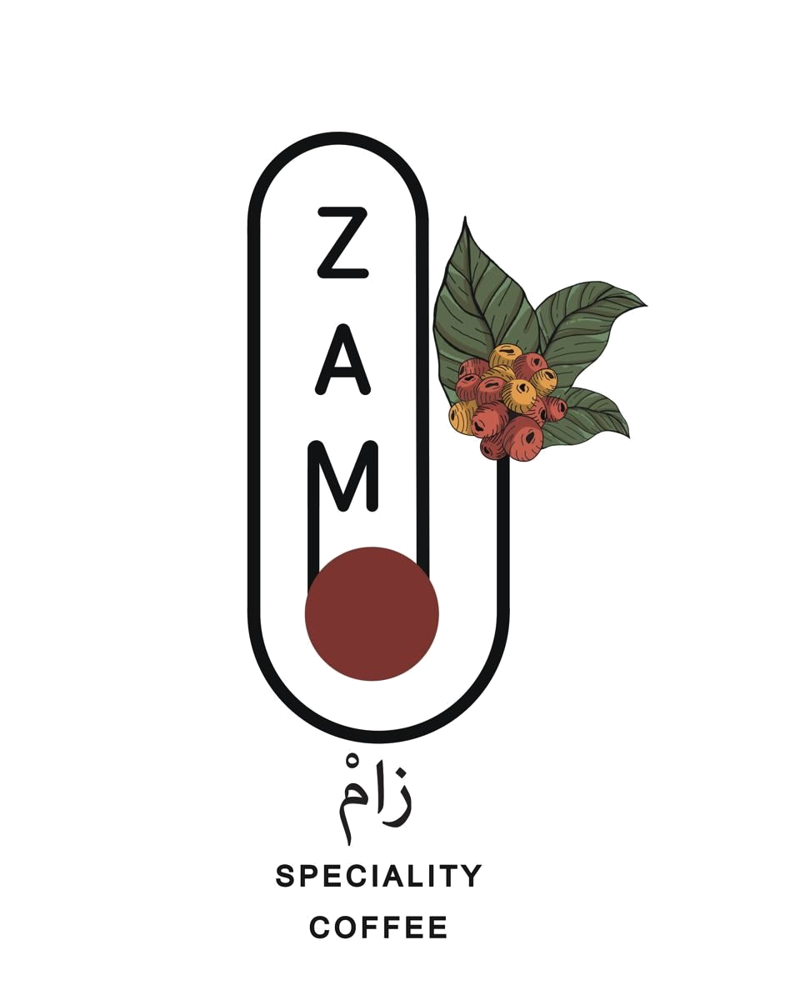

Operations Expert
تقييم موثق، مخالفات قابلة للمتابعة، واعتماد إلكتروني
10 درجات لكل بند: 10 مطابق، 5 جزئي، 0 غير مطابق، ويمكن اختيار لا ينطبق.
سيتم اعتماد الزيارة باسم الحساب الحالي:
التوقيع الإلكتروني يحفظ مع المعرّف والدور والتاريخ والوقت.